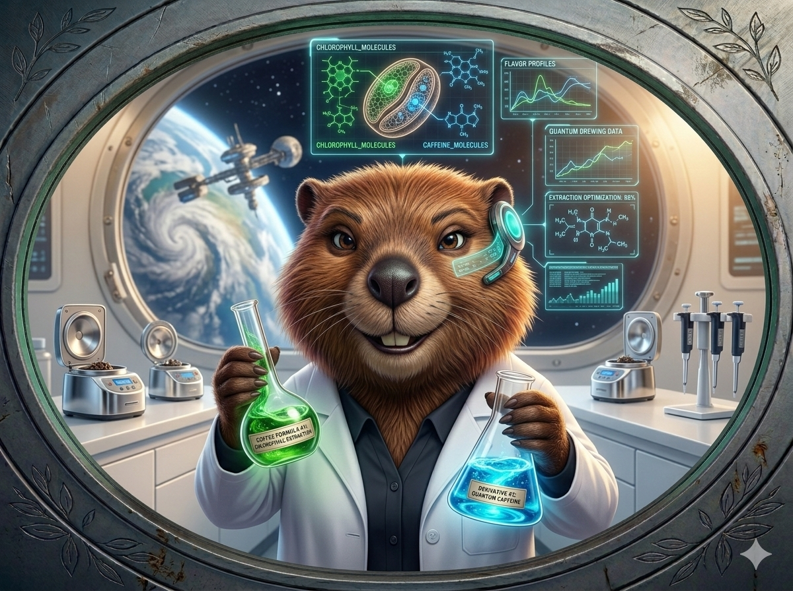
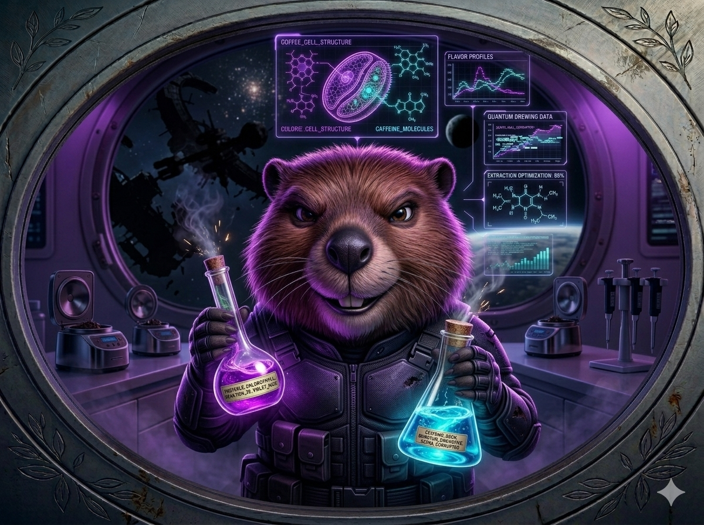
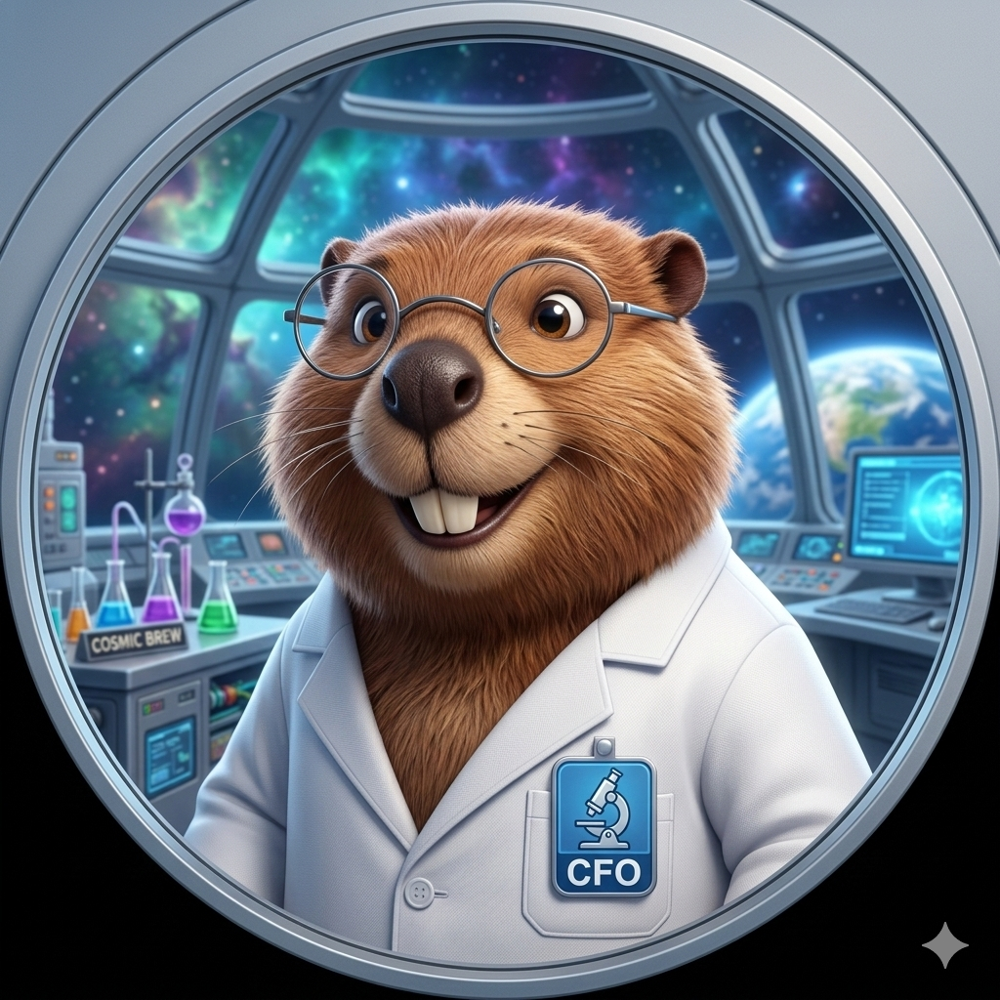
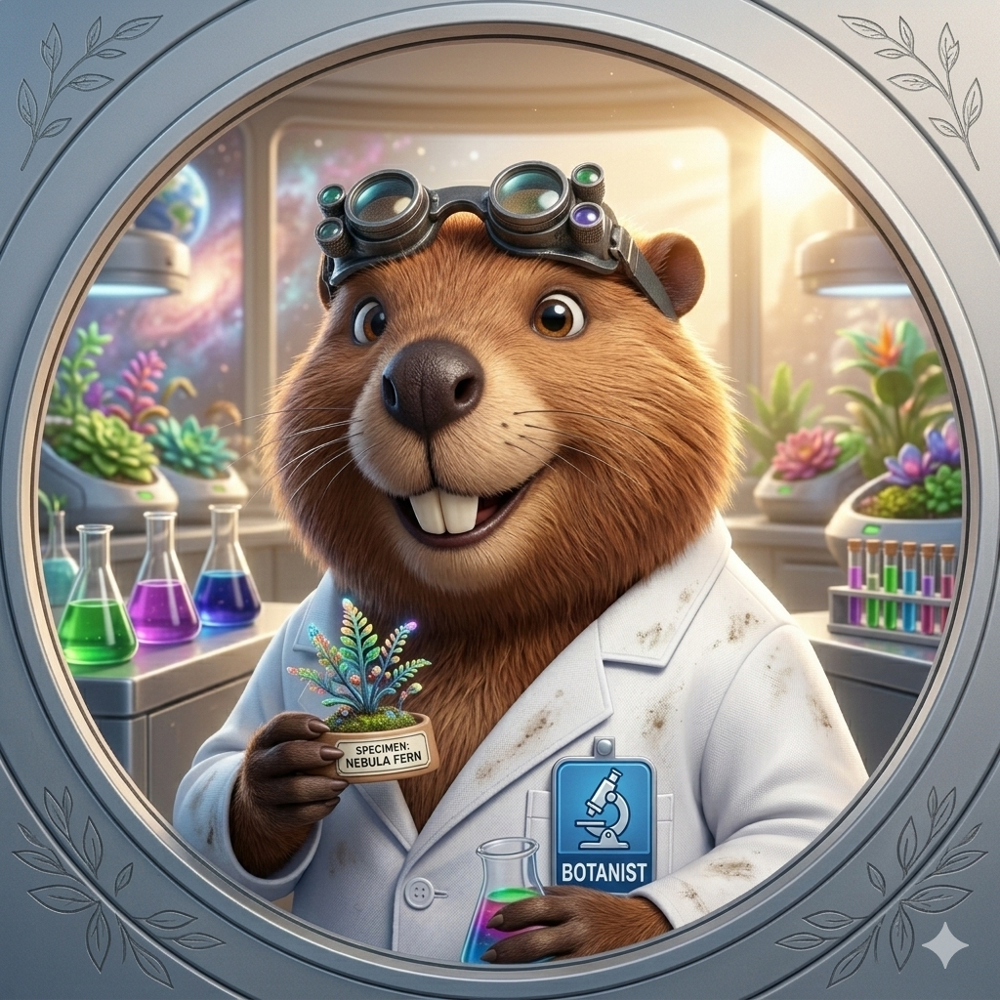
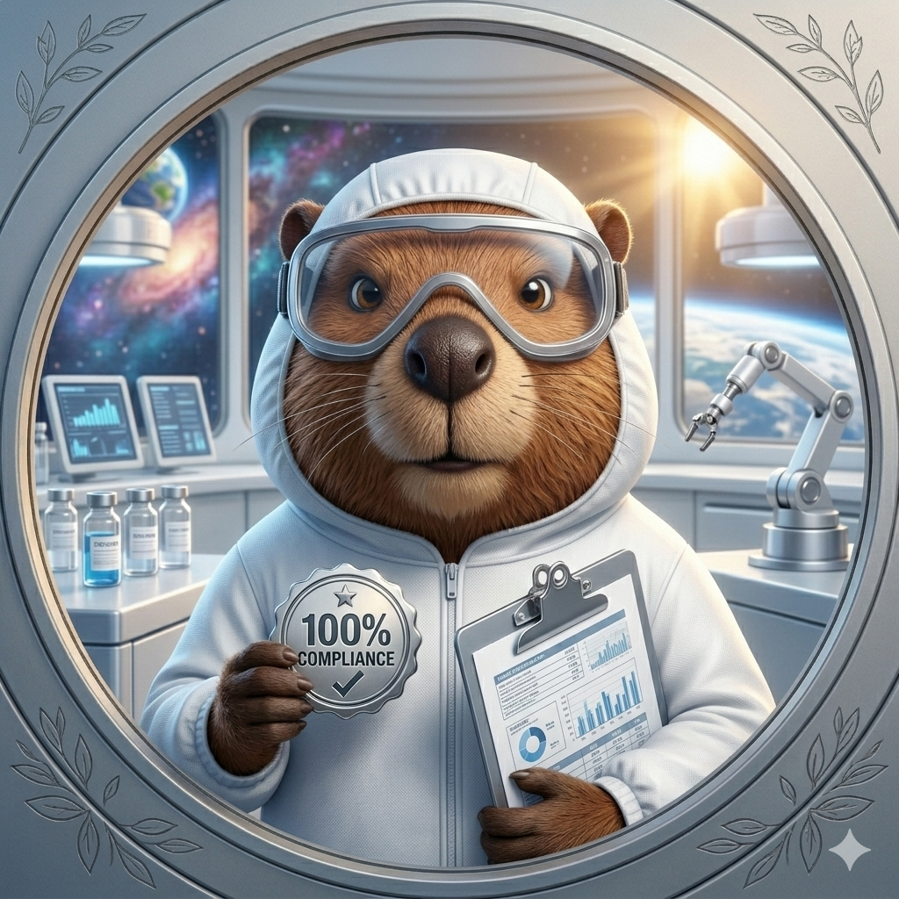
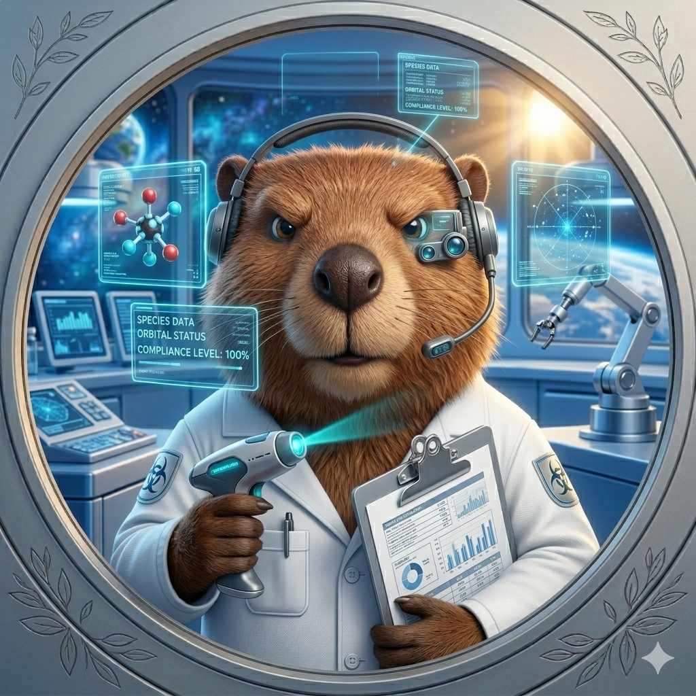
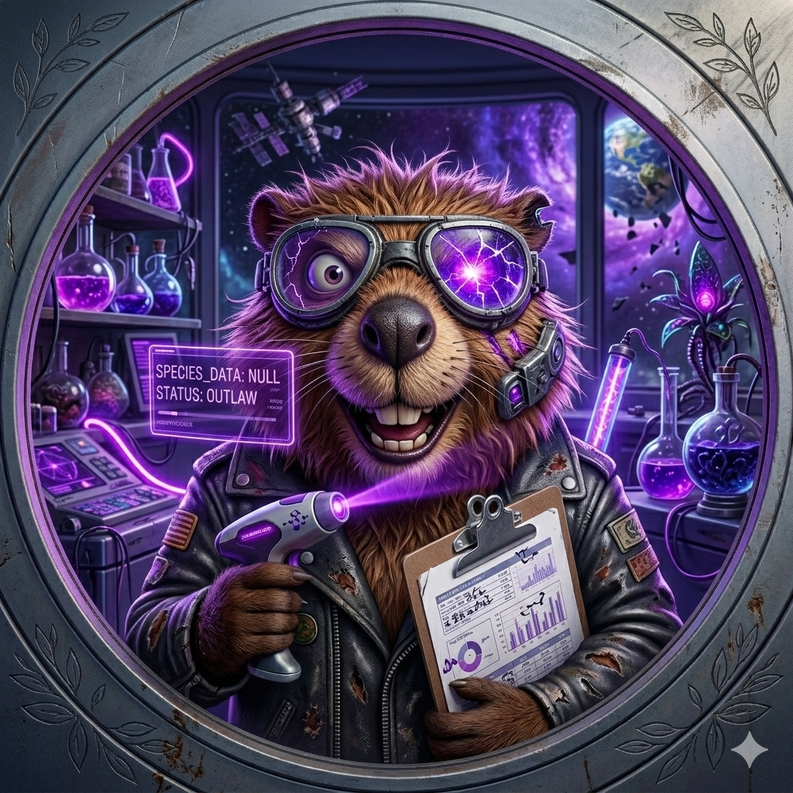
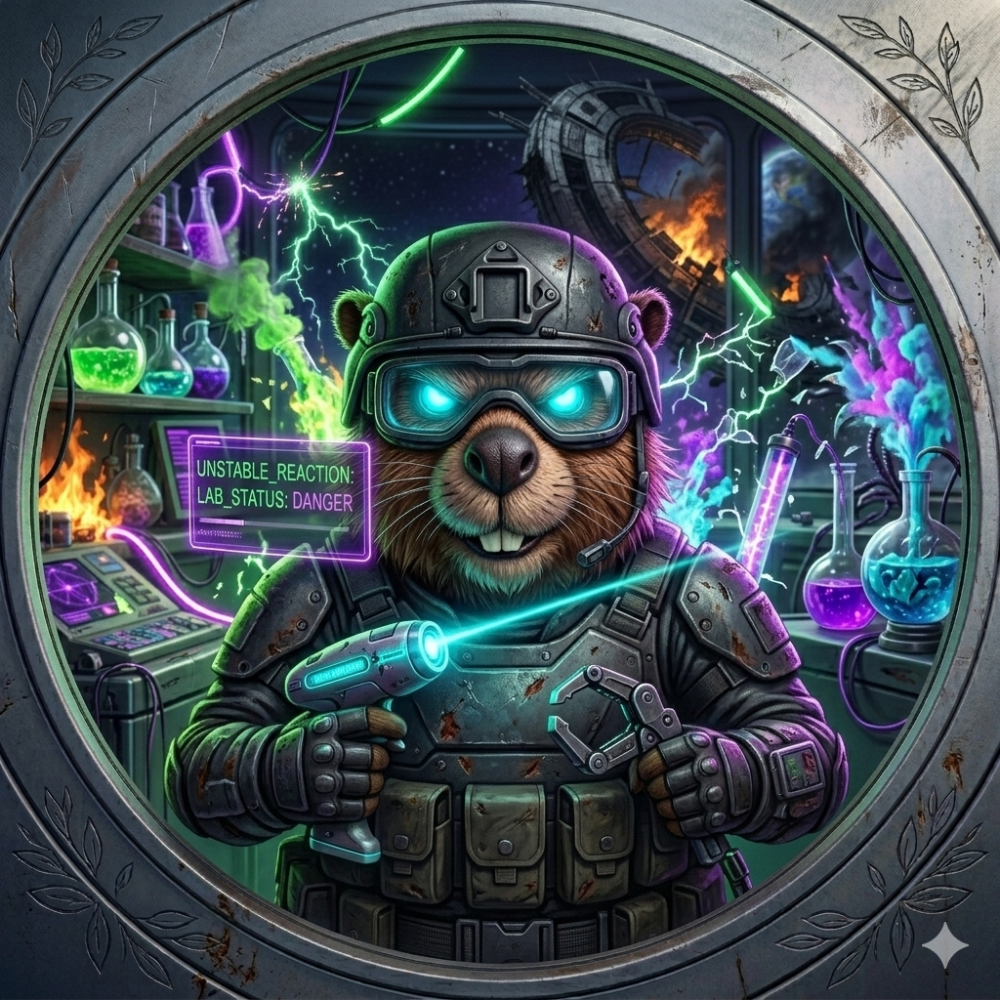
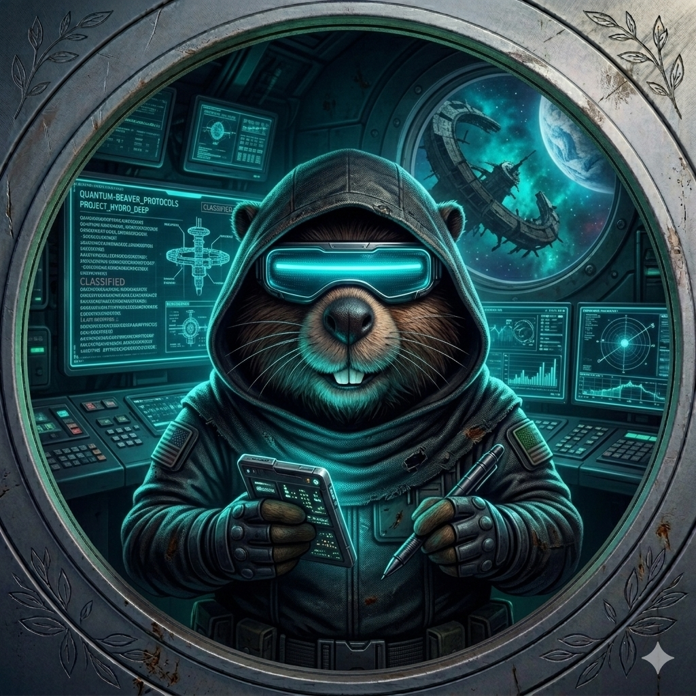
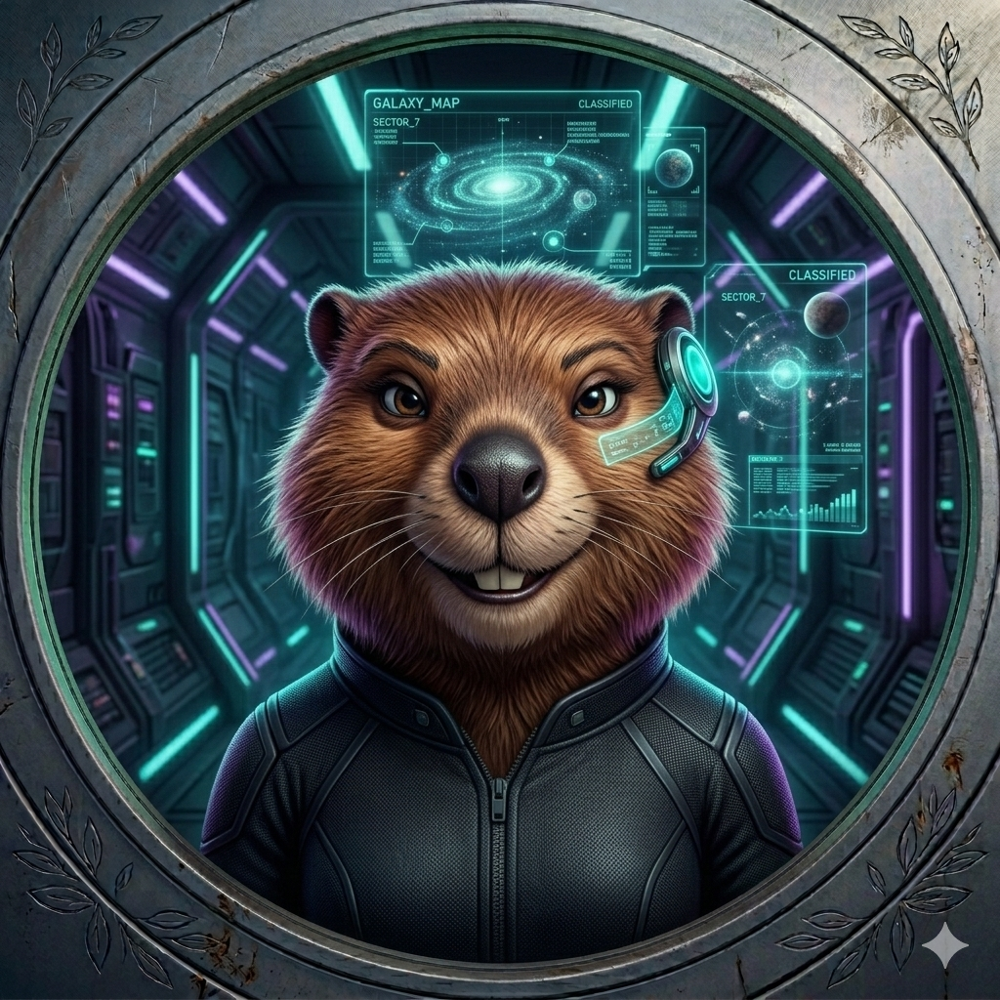

🧪
Stimulant
Caféine HCl 2.0™
Arabica stabilisé orbitalement. Notes de noisette, clarté mentale garantie.
En orbite basse autour de la Terre, nos castors scientifiques développent des formules énergétiques certifiées pour optimiser les performances humaines.
Découvrir les Formules →Lorsque la station passe dans l'ombre, certains protocoles scientifiques continuent… Des expériences non autorisées commencent.
Accéder aux Expériences →En 2147, après une crise énergétique interplanétaire, un collectif de castors ingénieurs décide de créer le premier laboratoire de nutrition orbitale.
Installé en orbite basse au-dessus de la Terre, Space Beaver Coffee développe des formules énergétiques stables, bio-synthétiques et approuvées par les autorités galactiques.
Molécules stimulantes extraites et stabilisées orbitalement pour une libération optimale.
Extraction botanique conforme aux normes galactiques de respect environnemental.
Chaque formule est dosée en microgravité pour une précision moléculaire maximale.
Lorsque la station passe en orbite côté obscur, le laboratoire bascule. Les castors les plus brillants restent après la fermeture.
Ils testent des formules non autorisées. Des stimulants instables. Des recettes interdites dans 12 systèmes stellaires.
"La science n'avance que dans l'ombre."
Des molécules trop puissantes pour la certification. Pour les véritables aventuriers.
Recettes non répertoriées. Effets non documentés. Satisfactions garanties.
Territoire scientifique clandestin. Accès sur invitation du Dr. Beaverstein uniquement.


4 formules développées en orbite basse, pour optimiser vos performances quotidiennes.
Des formules trop puissantes pour la certification officielle.
Arabica stabilisé orbitalement. Notes de noisette, clarté mentale garantie.
Matcha enrichi en chlorophylle activée. Énergie longue durée, servi en erlenmeyer.
Smoothie spiruline + fruits blancs. Formule de récupération musculaire avancée.
Ashwagandha + racine martienne. Anti-stress orbital homologué.
Triple extraction. Caféine concentrée instable. Interdit aux mineurs interstellaires.
Matcha enrichi en particules actives. Glow vert néon. Effets… variables.
Milkshake ultra sucré + stimulant mystère. Formule non documentée.
Shot court, effet rapide. Non homologué. Responsabilité déclinée.
Une équipe d'élite formée dans les meilleures universités galactiques.
Les renegats de la science orbitale. Ils opèrent dans l'ombre.

🧑🔬Chief Formulation Officer
Spécialiste en molécules stimulantes végétales. 12 ans d'expérience orbitale.
Certified Research Crew
🔬R&D Research Director
Expert en extraction botanique orbitale. Auteur de 47 publications galactiques.
Certified Research Crew
🧬Food Safety Officer
Garant de la conformité galactique. Zéro incident depuis 2151.
Certified Research Crew
📡Quality Control Analyst
Contrôle qualité et dosage moléculaire. Précision à 0.001 mg près.
Certified Research Crew
🧪Ancien Certifié · Rebelle
Scientifique certifié devenu renegat. Créateur des formules les plus instables.
Experimental Division
💀Réactions Instables
Spécialiste des réactions chimiques non documentées. Ne lit pas les notices.
Experimental Division
🔮Manipulation Moléculaire
Identité classifiée. Manipulation moléculaire expérimentale. Niveau : EXTRÊME.
Experimental Division
🕶️Opérations Nocturnes
Responsable des opérations nocturnes. Coordonne les livraisons clandestines.
Experimental Division